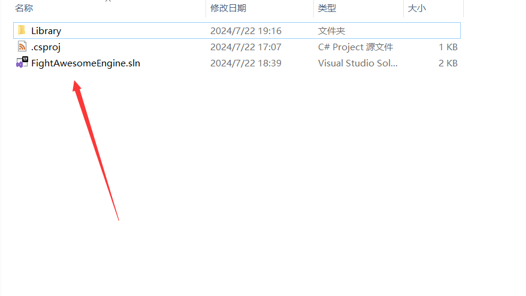

战斗爽开发包（Fight Awesome Engine Development Kit ）简称FDK
代码编辑器/IDE首选Visual Studio
FDK下载链接
腾讯微云：FDK 密码：noname
百度网盘：FDK 提取码：name
OneDirve：FDK
模组示例文件下载连接
腾讯微云：Example 密码：noname
百度网盘：Example 提取码：name
OneDirve：Example
进入官网下载vscode：
Download Visual Studio Code - Mac, Linux, Windows
选择左侧拓展按钮，安装汉化插件：
然后安装vscode-solution-explorer

期间可能会提示让你下载其它插件，都下载下来即可
如果左侧工具栏有这个图标证明你vscode-solution-explorer安装成功了

点击此图标后，在最上方点击这个文件夹的图标

打开FDK中的.sln文件

对此图标右键选择Add new project

中间的窗口一直往下滑，选择类库

选择C#

输入项目名称

接下来会让你输入主文件夹名称，这边建议和项目名一直，也就是输入项目名称之后按两下回车即可
如果最下方终端没有报错即可进行下一步

编辑你项目根目录中的.csproj文件，添加如下字段(可以到FDK中.csproj文件里复制)

然后把FDK的Library文件夹复制到你的项目根目录下
对你的项目右键点击Build按钮

在项目根目录下的bin/Debug/net8.0文件夹中有个【项目名.dll】的文件
这个就是你的模组dll文件了
如果没有或者终端报错证明模组开发环境配置失败
下载软件本体，选择社区版即可
下载 Visual Studio Tools - 免费安装 Windows、Mac、Linux (microsoft.com)
双击安装程序，选择以下配置

然后安装即可
(若觉得此文档的安装教程并不详细可以百度自行搜索Visual Studio C#开发环境配置教程)
安装完成之后直接双击FDK的.sln文件打开项目
在右侧解决方案资源管理器中找到FightAwesomeEngin解决方案然后对其右键选择添加，新建项目

选择类库即可

根据提示输入项目名，然后选择Net8.0框架
选择依赖项右键添加项目引用

点击浏览

框选FDK中Library文件夹中的所有.dll文件

点击确定
右键你的项目点击生成按钮，如果没有报错代表模组开发环境配置完毕

在项目根目录下的bin/Debug/net8.0文件夹中有个【项目名.dll】的文件
这个就是你的模组dll文件了
如果没有或者终端报错证明模组开发环境配置失败
开个C#项目引入FDK/Library/*.dll，然后想办法把你写的东西编译成dll即可